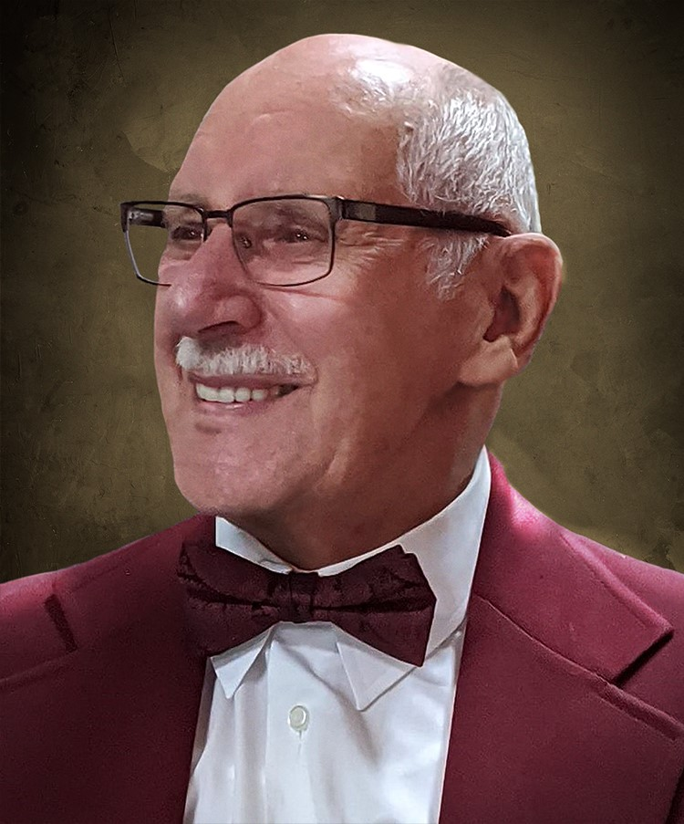
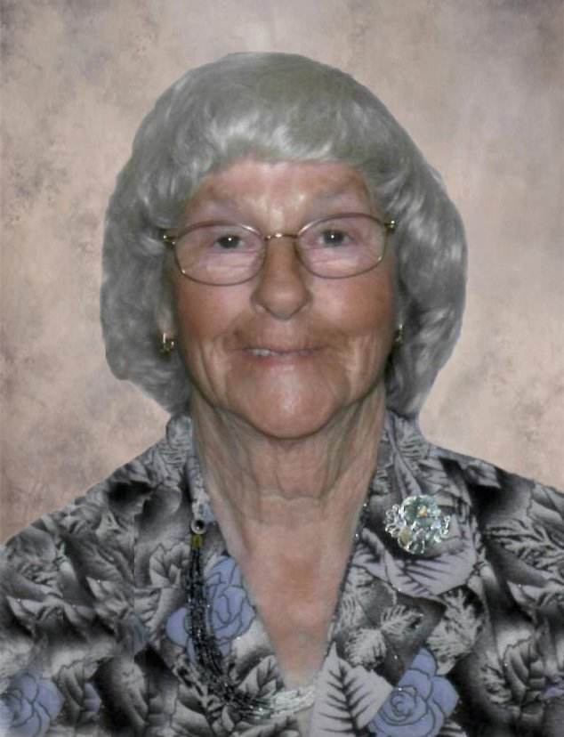

Douglas William Mercer

Mabel Armorel Mercer

Mercer, Mabel Armorel (nee Parsons) died peacefully at St. Mary’s Hospital in Kitchener on August
15, 2019 in her 81st year.
Mabel’s life-long companion, Douglas will miss the love and friendship they shared for more than 65
years. Mabel is survived by her children, Paul, James (Cinda) and Susan (Michael); grandchildren,
Riley, Stephen, David and Savannah; and by her brother Raymond. She is predeceased by her brother
Douglas
(Anne). She will be greatly missed by her many in-laws, nieces, nephews and cousins; friends and
family in Kitchener and Bancroft, Ontario, and those down home in Harbour Grace and Upper Island
Cove,
Newfoundland.
Mabel and Douglas raised many foster-children in the early years of the marriage in the late 1960’s
and early 1970’s. Mabel worked at Electrohome, MTD and she retired from Colonial Cookies. Mabel was
a talented seamstress and helped to make uniforms for the Ventures All-Girl Drum and Bugle Corps.
She and Doug spent many a summer travelling in support of the Drum Corps. Mabel was a Beaver Leader
and a school volunteer. She will be remembered for her commitment to her various church families
including Holy Trinity, Kitchener and Holy Trinity, Maynooth. Mabel and Douglas travelled
extensively with their young children and then their grandchildren, especially enjoying camping in
their fifth wheel. They travelled by land to Newfoundland, Calgary and across to Alaska, and even
flew as far as Dubai and Kenya.
Condolences for the family and In lieu of flowers the family requests donations to the Alzheimer’s
Society or the charity of your choice which can be arranged through the funeral home at
www.erbgood.com or 519-745-8445.
Papa, I'm going to miss you.